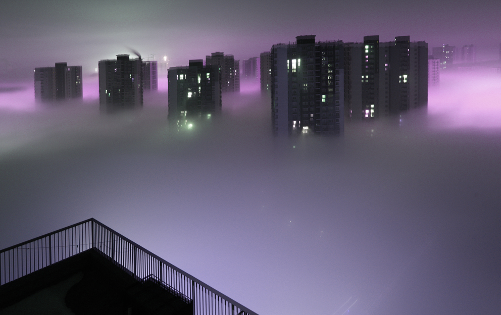

雾霾对人体最直接、影响最大的莫过于对呼吸系统造成的伤害了。本身患有呼吸系统 疾病的人，长期处于雾霾环境中，容易导致慢性阻塞性肺炎病或哮喘的加重，对肺部造 成不良影响，雾霾也会让健康人群出现咳嗽、咽喉肿痛等病症。此外，雾霾也会引发心 血管系统及内分泌系统的疾病，可能会出现呼吸困难、胸闷、心悸等不良症状。
人运动的时候会增加耗氧量，就会增加呼吸的频率，也就会吸入更多的空气。 在雾霾天进行户外运动会让人的肺活量增大，从而吸入更多的PM2.5，沉积到 肺泡里无法排出体外，所以雾霾天是不建议进行户外运动的。
雾霾天不能在室外进行运动，很多健身爱好者都选择将健身场地转移到健身房、 室内羽毛球馆、篮球馆内。那么在室内运动是否就无碍了呢？
其实，雾霾天也不适合在室内进行长时间的剧烈运动。因为雾霾天里， 无论在自己家里还是室内运动场所一般都不会打开门窗，空气流动不好， 在封闭不好的环境下有时甚至跟室外的空气差不多。在这种条件下剧烈的 运动即使在室内也应该尽量避免，因为高强度的运动结束之后，呼吸深度和 呼吸频率较之平常都会成倍增加，效果叠加之后单位时间内的呼吸量会增加 十几倍甚至几十倍。在室内空气不好的情况下这样的呼吸量势必对身体有害。
既然雾霾天气条件下的室内、室外运动都可能对身体造成损害，是否就应该“猫”在屋里 避免任何的健身锻炼呢？其实这并非是积极应对“霾”伏的好方法。
抵抗雾霾最重要的手段就是要增强体质，人们的体质好了抵抗力才能提高， 而增强体质最有效的方法是保持健身锻炼习惯。雾霾严重时锻炼地点、时间和方式 都要调整，但长期来说健身贵在坚持，最好不要中断。
健身锻炼并不只是打篮球、踢足球。在不能进行高强度有氧运动时， 可以选择在室内进行柔韧性、协调性、平衡性等方面的锻炼。这些素质都是身 体所需要的，但同时锻炼又不会明显增加呼吸量。等到天气条件允许了还是应 该多做一些有氧运动，增加心肺功能。
雾霾天气下可以改在室内进行锻炼，另外锻炼的方式和强度都应该进行相应的调整。 可以做一些有氧运动，比如羽毛球、乒乓球、游泳、瑜伽、肩颈操、太极这些较为舒缓、 可以牵拉放松身体、增加肌肉稳定性的健身项目。